Thất Tinh Kiếm
Bốn nhịp đánh theo dữ liệu hiện tại; mũi kiếm và vệt chém giữ điểm phát cũ.
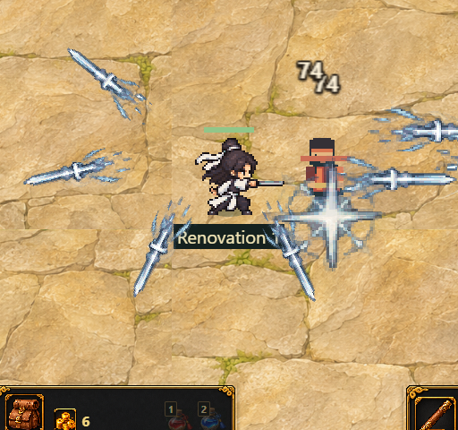
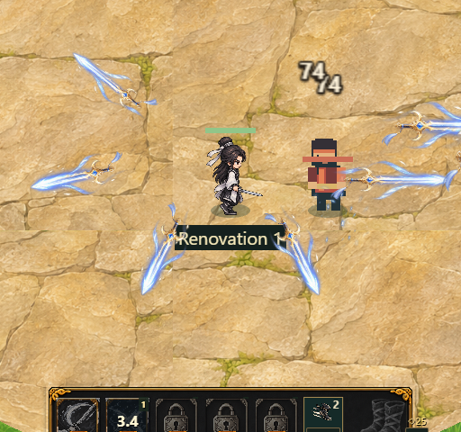
Bản thử để duyệt: thân và VFX mới, cùng điểm phát và dữ liệu chiến đấu. PNG từ hai client trong cùng trận Phaser, canvas 1366×768, camera 2×, không phóng ảnh sau khi chụp. Các ảnh được chụp đồng thời; một ảnh tĩnh không thể hiện đủ diễn tiến chiêu.
Chơi bản thử · Chơi với skill cũ · Game thường
Trong bản thử: chọn Võ Đang hoặc Thiên Sơn tại sảnh; chọn đòn Kiếm/Phiến; chọn skill → Equip Q → Cast Q. Dùng phím mũi tên đổi hướng, A đánh thường, Q dùng skill. Target line tạo mục tiêu, Attacking dummy dùng để thử Tọa Sát. Mana và hồi chiêu do server xử lý.
Phần này thay hành động của hai nhánh thử nghiệm. Hành động/skill của các nhánh còn lại và boss vẫn là nguồn cũ; không ghi nhận chúng là đã renovate.
Bốn nhịp đánh theo dữ liệu hiện tại; mũi kiếm và vệt chém giữ điểm phát cũ.


Kiếm bay thẳng, xuyên mục tiêu. Tái kích hoạt Q để dịch chuyển đến kiếm; tay không khi kiếm đang bay.
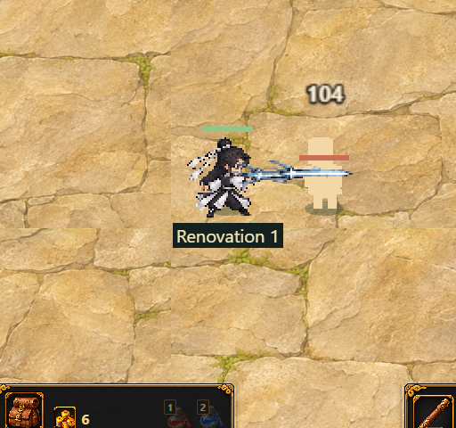
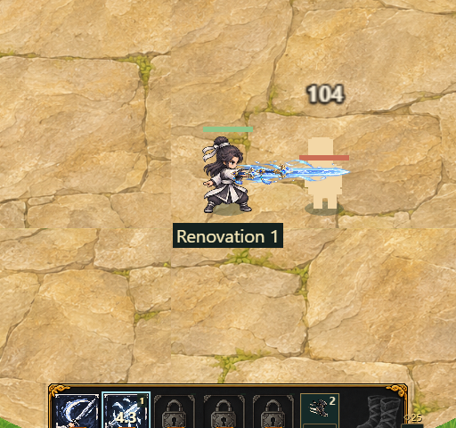
Trận kiếm cố định trên đất, giữ nguyên tâm và bán kính sát thương.
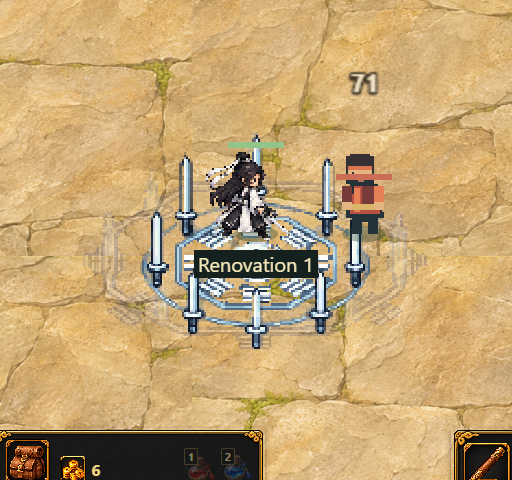
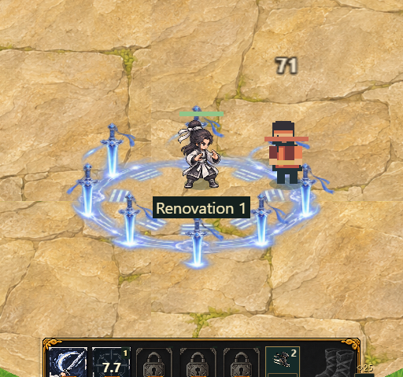
Dựng kiếm thủ thế, nhận đòn rồi phản kích theo sát thương đã tích. Vòng thủ riêng, không đổi Thái Cực Quyền.
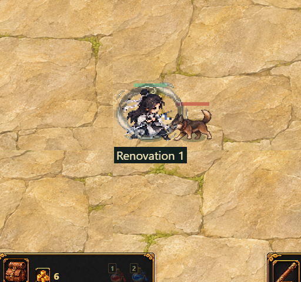
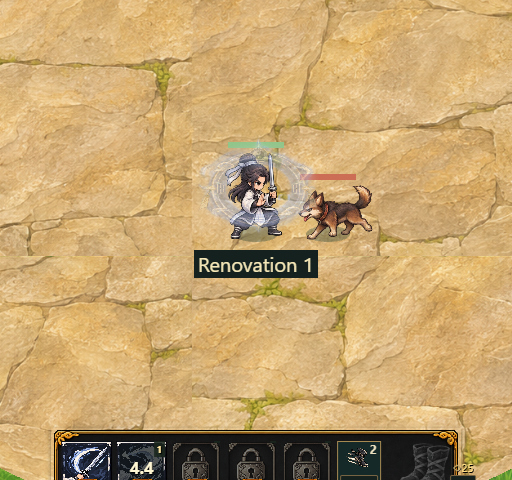
13 nhịp phóng kiếm theo tám hướng; tâm phát bám đúng nhân vật.
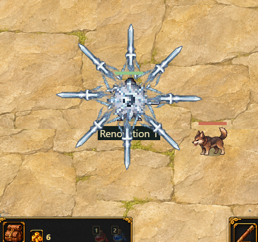
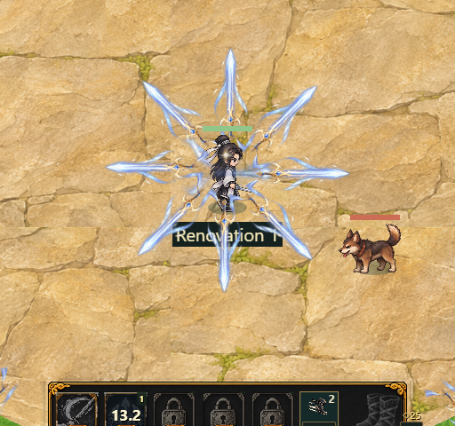
Hoa sen bảo hộ cố định trên đất. Rời vùng mất bảo hộ, quay lại nhận lại; không gây sát thương.
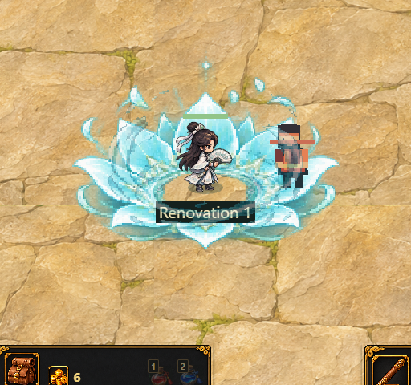
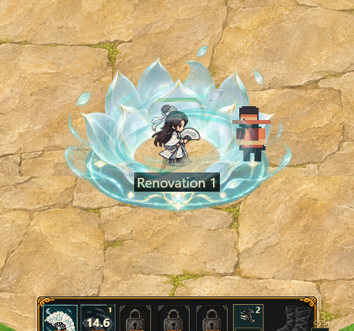
Xoay quạt sáu nhịp trong khi di chuyển, giữ nguyên tâm đánh và nhịp phòng hộ.
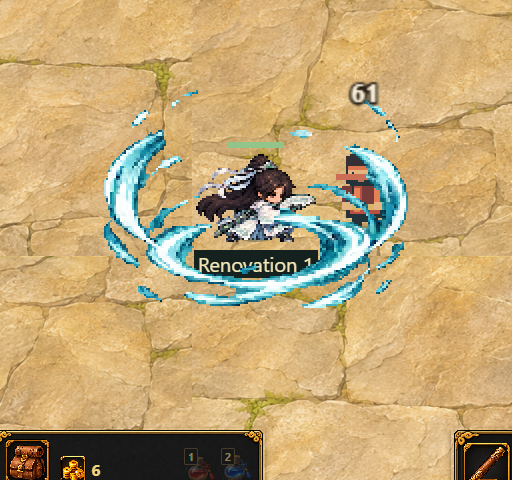
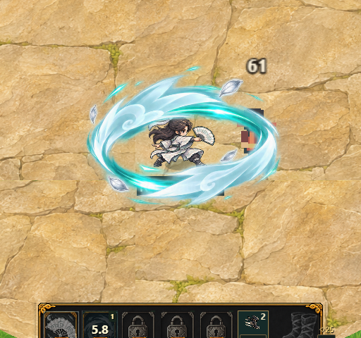
Lướt thẳng theo hướng đang nhìn; vệt gió bám đúng đường lướt. Ảnh tĩnh chỉ là một thời điểm ngắn.
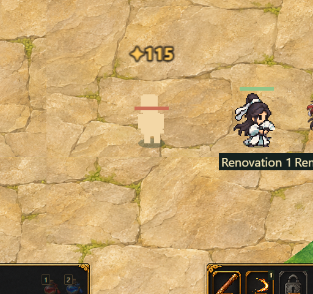
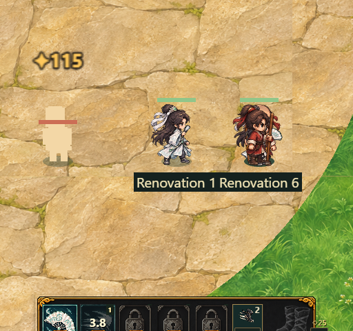
Tư thế kết ấn hoa mai và aura tăng cường, bám đúng người thi triển.
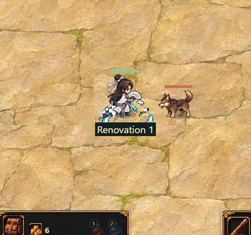
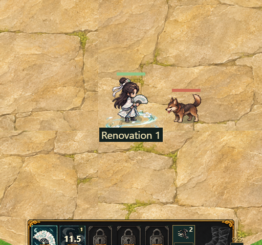
Xoay quạt 12 nhịp, mỗi ba nhịp phóng quạt tám hướng. Hiệu ứng và thân tách riêng.
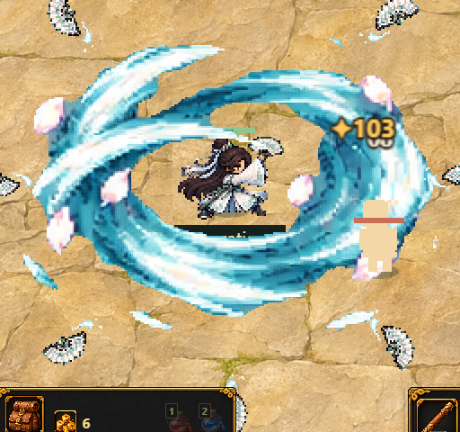
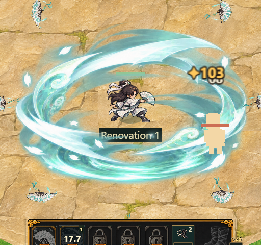